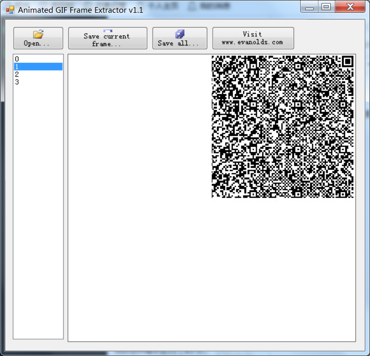
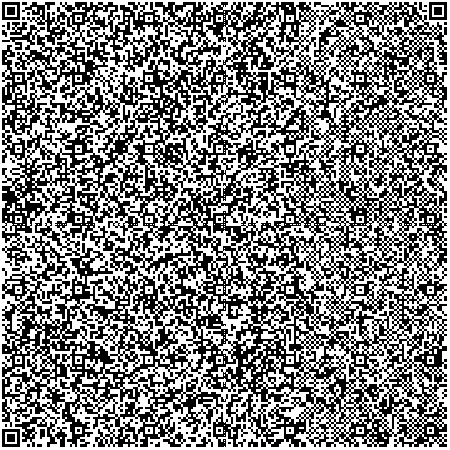

121 3-2
下载得到gif文件，是一个二维码的四角逐帧闪烁。

提取后拼接得到二维码。

扫码（手机微信或者用Python的pyzbar库均可）得到：
03f30d0ab8c1aa596300000000000000000200000040000000732e0000006400006401006c00005a00006402005a01006403005a02006404008400005a03006405008400005a040064010053280600000069ffffffff4e7403000000637466733d0000003138362c39382c3138302c3135342c3133392c3139322c3131342c31342c3130322c3136382c34332c3133362c35322c3231382c38352c3130302c3433630200000004000000070000004300000073610000007400006a01007c0100830100016401007d02007838007c0000445d30007d03007c02007402007403007c03008301007400006a04006402006403008302004183010064040017377d0200711a00577c02006a05006404008301007d02007c02005328050000004e7400000000690000000069ff00000074010000002c2806000000740600000072616e646f6d740400000073656564740300000073747274030000006f7264740700000072616e64696e7474050000007374726970280400000074040000007374723174030000006b65797404000000737472327401000000632800000000280000000073100000002f686f6d652f6374662f6262622e7079740500000066756e633107000000730c00000000010d0106010d012e010f016302000000040000000700000043000000735d0000007400006a01007c0100830100016401007d02007843007c00006a0200640200830100445d32007d03007403007c03008301007d03007c02007404007c03007400006a050064030064040083020041830100377d0200712300577c02005328050000004e52010000005202000000690000000069ff000000280600000052030000005204000000740500000073706c69747403000000696e74740300000063687252070000002804000000520b000000520a00000052090000007401000000692800000000280000000073100000002f686f6d652f6374662f6262622e7079740500000066756e63320f000000730c00000000010d01060116010c01240128050000005203000000520a000000740400000073747272520d000000521200000028000000002800000000280000000073100000002f686f6d652f6374662f6262622e707974080000003c6d6f64756c653e0100000073080000000c02060106030908
从头部数据来看是pyc文件，另存后反编译。
import random
key = 'ctf'
strr = '186,98,180,154,139,192,114,14,102,168,43,136,52,218,85,100,43'
def func1(str1, key):
random.seed(key)
str2 = ''
for c in str1:
str2 += str(ord(c) ^ random.randint(0, 255)) + ','
str2 = str2.strip(',')
return str2
def func2(str2, key):
random.seed(key)
str1 = ''
for i in str2.split(','):
i = int(i)
str1 += chr(i ^ random.randint(0, 255))
return str1
可以看出strr是func1运行输出结果，因此运行func2(strr, key)就能得到flag。但这里的脚本必须在Linux下用Python2运行才能得到正确的随机数结果。
root@kali:~/Desktop# python2 1.py
flag{U_r_Greatt!}
附python扫二维码脚本，线下赛QR Research（CQR）失灵时可以用：
from pyzbar import pyzbar
from PIL import Image,ImageEnhance
def get_ewm(img_adds):
img = Image.open(img_adds)
txt_list = pyzbar.decode(img)
for txt in txt_list:
barcodeData = txt.data.decode("utf-8")
return barcodeData
path = 'C:/Users/Administrator/Desktop/Frame0.png'
print(get_ewm(path))
flag：flag{U_r_Greatt!}
122 traffic
下载得到pcapng文件，wireshark打开。

逐个观察数据包，发现所有ICMP协议数据包中都有“heihei!!”和大量无意义的重复a，且每个包中a的数量都不同，怀疑ICMP协议数据包的长度隐藏了信息。筛选ICMP协议。

逐个记录数据包的长度：
144 150 139 145 165 91 109 151 122 113 106 119 93 167
根据格式，flag{的ASCI码为102 108 97 103 123，对比发现每位均相差42,。写脚本转换：
a = '144 150 139 145 165 91 109 151 122 113 106 119 93 167'
a = a.split(' ')
for i in a:
b = chr(int(i)-42)
print(b, end='')
flag：flag{1CmPG@M3}
123 NdisBackDoor1
和107题是一样的。
flag：F1aG{Tl-1e-Quieter-y0u-become T1-le-mOre-yOu-Are-abIe-To-1-1ear}
124 picture
和092题是一样的。
flag：CISCN{2388AF2893EB85EB1B439ABFF617319F}
125 要啥有啥
下载得到pcapng文件，wireshark打开。
先搜素字符串flag，在4302和4261号数据包中分别发现了xor.jpg和whoami.jpg。


尝试将其提取。注意whoami.jpg有标准的jpeg文件头FF D8，但xor.jpg实际并非jpg文件，需要结合十六进制编辑器，从“PHP/5.4.45->|”后开始提取文件。文件尾部也需要去掉“|<-”部分。


得到whoami.jpg和xor。
根据文件名提示，将这两个文件进行异或。
f = open('C:/Users/Administrator/Desktop/xor', 'rb').read()
f2 = open('C:/Users/Administrator/Desktop/whoami.jpg', 'rb').read()
ff = open('C:/Users/Administrator/Desktop/out', 'wb')
B = b''
for i in range(min(len(f), len(f2))):
a = f[i]
b = f2[i]
B += bytes(chr(a ^ b).encode('utf-8'))
ff.write(B)
ff.close()
得到如下文本：
import sys
key = '******************'
flag = 'AES_key{***************}'
if len(key) % 2 == 1:
print("Key Length Error")
sys.exit(1)
n = len(key) / 2
encrypted = ''
for c in flag:
c = ord(c)
for a, b in zip(key[0:n], key[n:2*n]):
c = (ord(a) * c + ord(b)) % 251
encrypted += '%02x' % c
print encrypted
#encrypt="cc90b9054ca67557813694276ab54c67aa93092ec87dd7b539"
python脚本还原AES_key：
m = "cc90b9054ca67557813694276ab54c67aa93092ec87dd7b539"
def process(a, b, m):
return "".join(map(chr, map(lambda x: (x * a + b) % 251,map(int, bytes.fromhex(m)))))
# 解释一下这个函数：
# bytes.fromhex(m)，相当于python2的m.decode('hex')，把字符串m十六进制转码为字节，如cc转为b'\xcc'
# map(int, bytes.fromhex(m))，取得转码后字节的每一位，并转为数字
# lambda x: (x * a + b) % 251，匿名函数，输入x，输出(x * a + b) % 251
# 结合上两行，对m的每两个字符转为十六进制数字，再计算(x * a + b) % 251
# map(chr, ***)，对上一行计算的结果ASCII转码为字符
for i in range(255):
for j in range(255):
if "AES" in process(i, j, m):
print(process(i, j, m))
# 对0-255范围的i和j，依次爆破原始字符串，若结果中包含AES即输出
得到结果：
AES_key{FK4Lidk7TwNmRWQd}
接下来需要找到AES加密的密文部分。观察流量包发现DNS流量较多，部分流量存在异常（这里是看Writeup的）。例如2871号数据包，访问了明显不存在的乱码地址，可能是base64。

使用tshark提取（这里也是看Writeup的）。
root@kali:~/Desktop# tshark -r aaca5ef838e04ee085c8c30a35cf336a.pcapng -T fields -e dns.qry.name|tr -s '\n'|awk -F '.' '{if ($1~/\S{19}/) print $1}'
Running as user "root" and group "root". This could be dangerous.
OYzmTh2MGNclc5gALl+
2lJ/xu58d4dAtidJc2w
4dRhB1cuh/pXAt17QSj
EIFMPiSE6w+DXpXJk9z
m0FD39MGvwL4ZNpr2Yn
dIPnjnb0W3xNeP+e5r/
/GhTYkNTdPo4xpT4d+H
MihDB1mZNcQ8Gib69l5
NlqC8PFjEeABWPfJezq
G0LozsEjukHJOCMhVlR
rirtkI7/ExFZAgH+G1i
/gaw84nJ0DbGXQEpA2w
ySh6/iXeJD1ZYgt7jRg
KLCL6CGggxsAEP9+m3Q
Mvw3nE7h3GtoC0xqGKm
jboBW7h+WyH+QhJRd1E
L+Qc7cgRAaVNYwWrWDM
ByHOIlSig+MvEg0GTih
cnuNdgRpD4fgmEgjvAv
ScqJkQUes+Mxbi4NNkC
v6YANnbGFbZSUVs3Ybu
lPu6Xzj+/nBmJcOsti9
4BHja8Cjym4l2qpmIkj
R6kONAs2e7uAkduLR1z
实际上这里漏了4237号包的TZkxEitNqplA==和7366号包的H9,。也可以发现每个包含密文的包后面都跟着一个解析google.com的包，可以根据这点手工提取所有密文。总之得到如下两段密文：
OYzmTh2MGNclc5gALl+2lJ/xu58d4dAtidJc2w4dRhB1cuh/pXAt17QSjEIFMPiSE6w+DXpXJk9zm0FD39MGvwL4ZNpr2YndIPnjnb0W3xNeP+e5r//GhTYkNTdPo4xpT4d+HMihDB1mZNcQ8Gib69l5NlqC8PFjEeABWPfJezqG0LozsEjukHJOCMhVlRrirtkI7/ExFZAgH+G1i/gaw84nJ0DbGXQEpA2wySh6/iXeJD1ZYgt7jRgKLCL6CGggxsAEP9+m3QTZkxEitNqplA==
Mvw3nE7h3GtoC0xqGKmjboBW7h+WyH+QhJRd1EL+Qc7cgRAaVNYwWrWDMByHOIlSig+MvEg0GTihcnuNdgRpD4fgmEgjvAvScqJkQUes+Mxbi4NNkCv6YANnbGFbZSUVs3YbulPu6Xzj+/nBmJcOsti94BHja8Cjym4l2qpmIkjR6kONAs2e7uAkduLR1zH9
两段分别在线解密：

得到：
aes.py
Desktop
Documents
Downloads
examples.desktop
favicon.ico
libemail-engine
Music
Pictures
Public
pycharm-2016.2.3
re
realflag
reverse_dns_shell_client.py
Templates
Videos
和：
Please submit the used ftp CVE ID like "CVE********"and LCTF{A11_1n_0ne_Pcap} as your flag.eg."CVE12345678A11_1n_0ne_Pcap"
也就是说答案要求找到流量中所使用的CVE漏洞编号。
往前看最初取得图片时的4261号数据包，追踪http流可以发现内容是向1.php页面POST了一段命令，从命令内容（base64解密一下）可以看出用的是菜刀。那么1.php应该是webshell，上传1.php时用的应当就是所需漏洞。

逐个观察导出的HTTP对象列表，关注主机名192.168.138.136，发现4216号包已经在向1.php POST数据，因此挂马时间在这之前。注意到3862号数据包。

追踪http流看到proftpd关键字。搜索“proftpd 漏洞”找到2015年的CVE-2015-3306漏洞。
尝试提交LCTF{CVE20153306A11_1n_0ne_Pcap}，成功。
flag：LCTF{CVE20153306A11_1n_0ne_Pcap}
126 disordered_jpg
下载得到jpg文件，打开显示已损坏。十六进制编辑器打开：

可以观察到文件头部是乱序的，可以大致看到文件头FF D8和Exif块开头FF E1 XX XX 45 78 69 66的痕迹。对比一下：
正常：FF D8 FF E1 XX XX 45 78 69 66 XX XX
损坏：E1 FF D8 FF 78 45 F8 15 00 00 66 69
很明显该文件以每四个字节为单位进行了反序，同时因为总字节长度除4余1，最后一字节D9是正常的。
写python脚本将其修复：
jpg = open('C:/Users/Administrator/Desktop/1.jpg', 'rb').read()
tmp = b''
l = (len(jpg) - 1) // 4
for i in range(l):
tmp += jpg[4 * i + 3].to_bytes(1, 'big')
tmp += jpg[4 * i + 2].to_bytes(1, 'big')
tmp += jpg[4 * i + 1].to_bytes(1, 'big')
tmp += jpg[4 * i].to_bytes(1, 'big')
# .to_bytes(1, 'big')将数字转换为字节，其中1是字节位数，big是高位在前
out = open('C:/Users/Administrator/Desktop/out.jpg', 'wb')
out.write(tmp)
得到out.jpg：

flag：flag{F098996689560BBB1B566EBC10D5E564}
记录一个更简洁的脚本写法：
f1 = open('flag.jpg', 'rb').read()
f2 = open('data.jpg', 'ab+') # ab+：以二进制格式打开一个文件用于追加。
for i in range(0, len(f1), 4):
f2.write(f1[i:i+4][::-1])
f2.close()